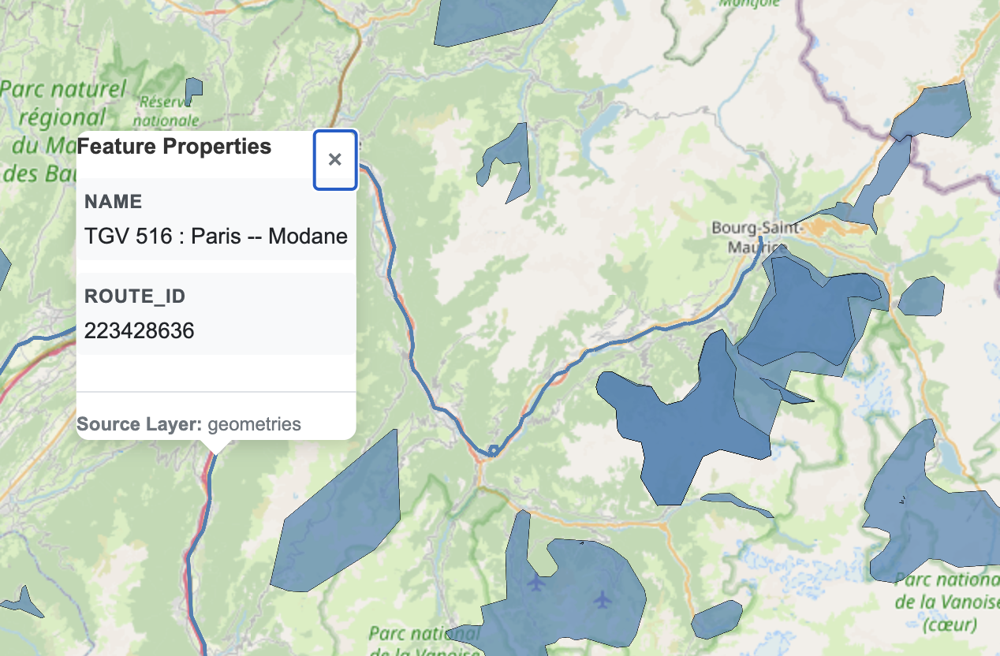

End-to-end example: Taking the train to the slopes
Geospatial analysis often includes combining multiple data sources. In this example, we will only use OpenStreetMap (OSM), but as you’ll see one of the datasets is a LineString type and another is a Polygon type.
Why don’t we use Overture Maps, you might ask, as that’s already available in a cloud-native format? Very good question. Unfortunately, Overture Maps doesn’t (yet) contain all datasets that you can find in OSM, so while roads and buildings are included, for example transit isn’t (as of writing).
Let’s say we’d like to go skiing but would like to avoid the hassle of driving or flying, Are there slopes accessible by train? It turns out, yes – let’s find them. We’ll use France as an example but you could just as well try to change it to another (Alpine) country.
Fetching OSM
See also Importing other formats on how to use DuckDB Spatial to read OSM and other file types.
Transform into a table with GEOMETRY with Databricks Spatial SQL
See also Databricks Spatial SQL ST functions, and Delta Lake tables with GEOMETRY.
%sql
create or replace table skiresorts as
with wintersports as (
select
id as wintersports_id,
tags.name,
posexplode(refs) as (pos, id)
from
planet_osm_france
where
kind = "way"
and tags.landuse = "winter_sports"
)
select
wintersports_id,
name,
st_makepolygon(
st_makeline(
transform(sort_array(array_agg(struct(pos, lon, lat))), x -> st_point(x.lon, x.lat, 4326))
)
) geometry
from
wintersports join planet_osm_france p using (id)
group by
allMake sure you are using Serverless environment version 4+, or else outputting GEOMETRY/GEOGRAPHY types directly (without e.g. st_asewkt()) will not work.
Visualize with Lonboard
See also Visualize with Lonboard.

Load the train network
We will use similar techniques as above to load the railway network as well.
%sql
with t1 as (
select
tags.name,
id as trainroute_id,
posexplode(refs) as (pos, id)
from
planet_osm_france
where
tags.type = 'route'
and tags.route = 'train'
and id = 2274158
),
t2 as (
select
t1.name,
p.id route_id,
p.* --,
-- posexplode(arrays_zip(p.refs, p.ref_roles, p.ref_types)) as (pos, ref),
-- ref["refs"] id,
-- ref["ref_roles"] role,
-- ref["ref_types"] type
from
t1 join planet_osm_france p using (id)
where
p.tags.railway = 'rail'
)
select
*
from
t2%sql
create or replace table train_routes as
with t1 as (
select
tags.name,
id as trainroute_id,
posexplode(refs) as (pos, id)
from
planet_osm_france
where
tags.type = 'route'
and tags.route = 'train'
),
t2 as (
select
t1.name,
p.id route_id,
posexplode(refs) as (pos, id)
from
t1 join planet_osm_france p using (id)
where
p.tags.railway = 'rail'
)
select
t2.name,
route_id,
st_makeline(
transform(sort_array(array_agg(struct(pos, lon, lat))), x -> st_point(x.lon, x.lat, 4326))
) geometry
from
t2 join planet_osm_france p using (id)
group by
allLet’s try to visualize the same way as we did for the ski domaines (spoiler alert: it might not work):
Visualize with PMTiles
The above visualization probably failed, due to the dataset being too large for the widget in Databricks. While for medium sized datasets there’s another workaround by saving the Lonboard output to a seperate HTML file via to_html() (detailed here), let’s instead use PMTiles instead that can work also for very large datasets.
See also the tippecanoe example here, which we will follow now via an intermediate Parquet and FlatGeobuf file.
We will actually visualize both the train routes and the ski resorts at the same time below.
# Write FlatGeobuf
query = f"""
copy (
select
* replace (st_geomfromwkb(geometry) as geometry)
from
read_parquet('/Volumes/{CATALOG}/{SCHEMA}/{VOLUME}/geometries.parquet/part-*.parquet')
) to '/Volumes/{CATALOG}/{SCHEMA}/{VOLUME}/geometries.fgb'
(FORMAT GDAL, DRIVER flatgeobuf, LAYER_CREATION_OPTIONS 'TEMPORARY_DIR=/tmp/')"""
duckdb.sql(query)import os
HOME = os.environ["HOME"]
# see https://github.com/felt/tippecanoe/blob/main/README.md#try-this-first and e.g.
# https://github.com/OvertureMaps/overture-tiles/blob/main/scripts/2024-07-22/places.sh
# for possible options
!{HOME}/.local/bin/tippecanoe -zg -rg -o /tmp/geometries.pmtiles --simplification=10 --drop-smallest-as-needed --drop-densest-as-needed --extend-zooms-if-still-dropping --maximum-tile-bytes=2500000 --progress-interval=10 -l geometries --force /Volumes/{CATALOG}/{SCHEMA}/{VOLUME}/geometries.fgb
# NOTE: this mv will emit an error related to updating metadata ("mv: preserving
# permissions for ‘[...]’: Operation not permitted"), this can be ignored.
!mv /tmp/geometries.pmtiles /Volumes/{CATALOG}/{SCHEMA}/{VOLUME}/geometries.pmtilesAnd, that’s it! You can visualize the pmtiles file by downloading and uploading to https://pmtiles.io , or much better, by using a PMTiles viewer via Databricks Apps, an example implementation is here and your result would look like this:
Note that the maps built on PMTiles are slippy maps, pannable and zoomable, unlike the screenshot of it below.

Spatial join
To actually answer our question of which ski resorts are closest to a train line, we will also need to use a locally valid coordinate system, for st_buffer and similar functions to be able to work in meters, not degrees. In case of France being an example, probably EPSG:2154 is a suitable one.
Now let’s say we want to find train routes at a maximum distance (say, 1km) of any ski resort. (Ideally we’d want to find train stations, but that’s too easy and in order to illustrate working with linestrings, let’s stay with routes. Think of it as a lower bound on distance.) We can thus buffer the ski resort polygons with the maximum distance, and intersect them with the routes, using H3 spatial indexing to expedite the join:
%sql
create
or replace table skiresorts_buffered_h3 cluster by (cellid) as with buffered as (
select
*,
st_transform(
st_buffer(st_transform(geometry, 2154), 1000),
4326
) :: GEOGRAPHY(4326) as geography_buffered
from
skiresorts
),
tessellated as (
select
*,
explode(h3_tessellateaswkb(geography_buffered, 8)) h3_8
from
buffered
)
select
*
except
(h3_8),
h3_8.cellid,
h3_8.core,
st_geomfromwkb(h3_8.chip) chip
from
tessellated%sql
create or replace table closest_resorts as
select
wintersports_id,
s.name,
array_agg(route_id) route_ids
from
skiresorts_buffered_h3 s join trainroutes_h3 t using (cellid)
where
st_intersects(s.chip, t.chip)
group by
all;
select
*
from
closest_resorts
-- Returns:
-- wintersports_id name route_ids
-- 599436073 Serre Chevalier [444359203,...]
-- 589005175 Les Arcs / Peisey-Vallandry [171202612,...]
-- 758151764 Le Lioran [88691173,...]And that’s it, we found the 11 ski resorts closest to (i.e. within 1 km) train services! I leave it as an exercise to the reader to calculate the actual distance between the (unbuffered) resort polygons and the train route linestrings – don’t forget to use the geometry transformed to the local coordinate system, otherwise st_distance will work with degrees (and st_distancespheroid only works within points as of writing).
If you were interested in, say, calculating the actual shortest path between such geometries, you could use a Spark UDF with DuckDB.
Let’s visualize the winners once again:
%sql
create or replace temporary view closest_resorts_geo as
select
wintersports_id,
skiresorts.name as resort_name,
geometry
from
skiresorts join closest_resorts using (wintersports_id)
union all
select
null as wintersports_id,
null as resort_name,
geometry
from
train_routes
join (
select
explode(route_ids) route_id
from
closest_resorts
)
using (route_id)